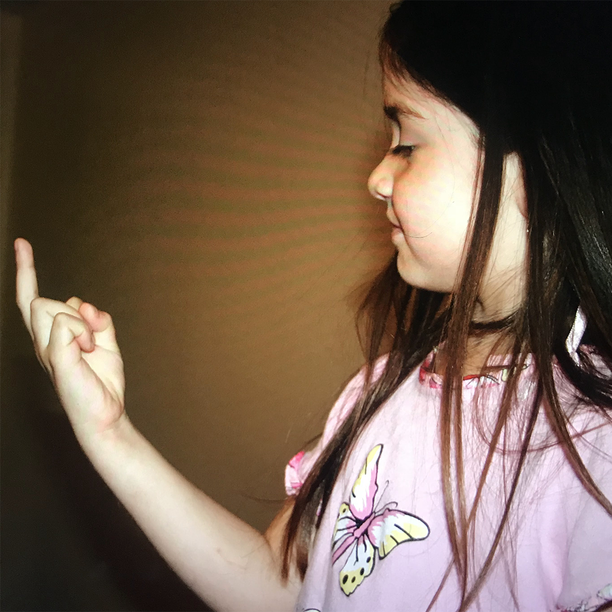
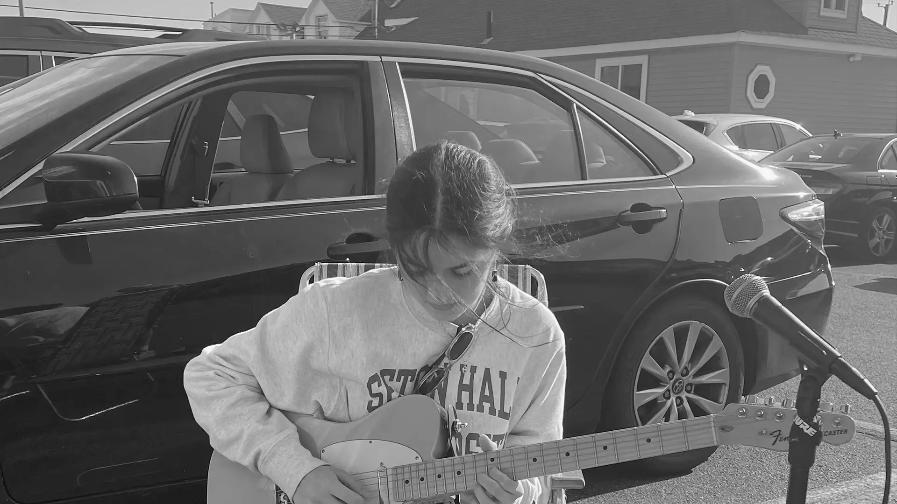

About
I'm Ryan Sky, a multidisciplinary designer from New Jersey.
My work blends experiential design, visual storytelling, and illustration across physical spaces, digital content, and branded collateral. I'm particularly interested in design as a source of human connection, with a focus on projects that offer an atmospheric and tactile experience.
Outside of design, I enjoy film photography, making stainless steel jewelry, playing guitar, and hopelessly waiting for another Radiohead tour.
Reach out at hi@ryan-sky.com.
Services
Selected Clients

